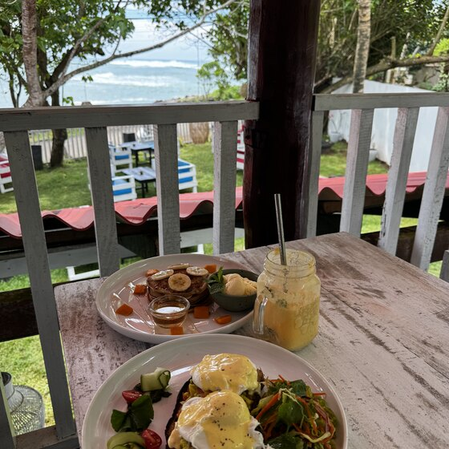
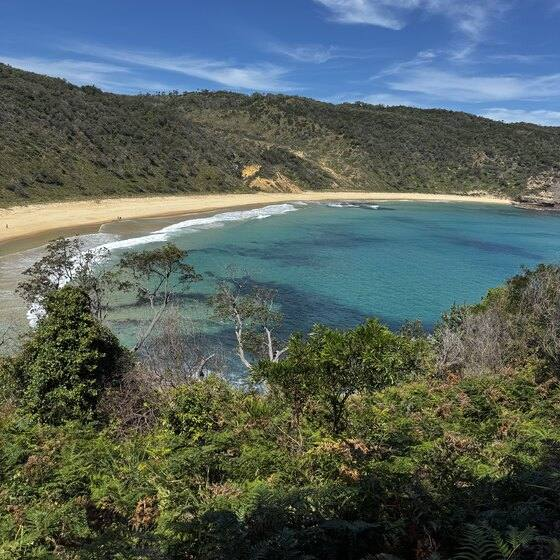
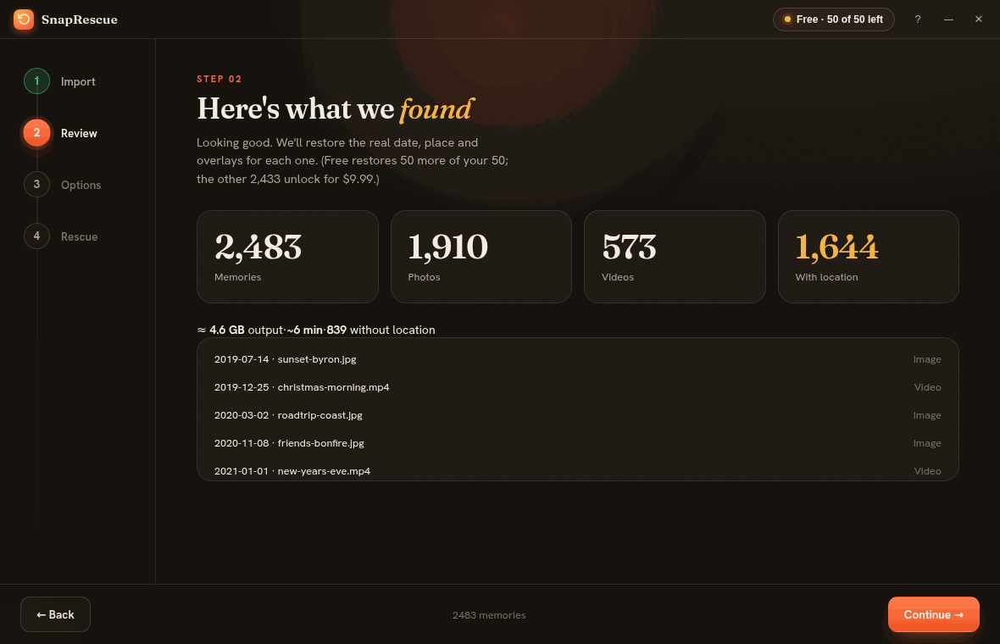

Vos souvenirs, ce sont les gens, les lieux et les versions de vous que vous voudrez retrouver un jour. Mais l'export de Snapchat efface les dates et les lieux, alors tout arrive dans votre photothèque daté d'aujourd'hui. SnapRescue rétablit l'heure, le lieu et les légendes d'origine, et range tout au jour où cela s'est vraiment passé.


L'application
Pas de désordre ni de dossiers à fusionner à la main. Importez votre export, voyez ce qui a été trouvé, choisissez la destination, puis regardez vos souvenirs être sauvés.

SnapRescue sur Windows et Mac. Mobile bientôt.
Le piège dont personne ne parle
Snapchat vous donne les photos et vidéos brutes, mais les dates et le GPS se trouvent dans un fichier memories_history.json séparé que votre galerie ne lit jamais. Importez-les et 2 000 souvenirs de plusieurs années de votre vie s'empilent tous à la date d'aujourd'hui, sans carte, sans ordre, sans histoire.
SnapRescue réunit chaque fichier avec ses vraies métadonnées avant qu'il touche votre galerie.
Quatre étapes, sans compétences techniques
Dans l'appli : Réglages → Mes données → Envoyer la demande. Ils vous envoient un lien de téléchargement. (Nous ne touchons jamais à votre compte.)
Snapchat peut envoyer plusieurs fichiers ZIP. Mettez-les tous dans un seul dossier. Pas besoin de les décompresser vous-même.
Ouvrez SnapRescue et sélectionnez ce dossier. Il décompresse et trouve chaque souvenir avec ses métadonnées, automatiquement.
Obtenez des dossiers nets 2019/ 2020/ … prêts pour Google Photos, Apple Photos, Immich ou ailleurs.
Pourquoi c'est la bonne
Snapchat stocke chaque moment en UTC. D'autres outils le collent tel quel, donc un snap du soir à l'étranger apparaît au petit-déjeuner. SnapRescue utilise le GPS de chaque photo pour le convertir en heure locale réelle.
Coordonnées intégrées pour que la carte fonctionne, plus un lieu lisible comme « Byron Bay » inscrit.
Légendes, autocollants et incrustations de date recomposés sur la photo ou la vidéo en un seul fichier propre.
Snapchat envoie votre export en plusieurs fichiers ZIP. D'autres outils vous obligent à tout extraire et fusionner les dossiers à la main. SnapRescue prend les ZIP tels quels et fait cette étape pour vous.
Organisés automatiquement en dossiers par année avec des noms de fichiers datés, une archive parcourable immédiatement.
Tout s'exécute sur votre ordinateur. Rien n'est envoyé, sans compte, aucun serveur ne voit vos photos.
Métadonnées complètes pour les deux, sans perte de qualité. Seules les métadonnées changent, jamais les pixels.
30 000 souvenirs ? Arrêtez quand vous voulez et reprenez exactement où vous en étiez. Rien n'est refait.
EXIF intégré que Immich, Jellyfin, Photoprism et toute bibliothèque lisent à l'import, plus des fichiers annexes XMP en option pour les bibliothèques externes. Ce qu'aucun rival ne propose.
Comparatif honnête
| Fonction | ExportSnaps | Memories Import | SnapRescue |
|---|---|---|---|
| Restaurer dates et GPS | ✓ | ✓ | ✓ |
| Décompresse votre export | ✗ extraire à la main | ✗ | ✓ |
| Convertir en vraie heure locale | décalage seul | ✗ | ✓ |
| Noms de lieux lisibles | ✗ | ✗ | ✓ |
| Fusionner légendes/autocollants | ✓ | ✗ | ✓ |
| Organisation en dossiers par année | à plat | ✗ | ✓ |
| Prêt pour Immich / auto-hébergé (XMP) | ✗ | ✗ | ✓ |
| Reprendre les gros exports | échecs seuls | ✗ | ✓ |
| 100% local / privé | ✓ | ✓ | ✓ |
| Prix | $14.99 | payant | $9.99 |
Comparaison basée sur les fonctions et tarifs publiquement affichés en juin 2026. ExportSnaps et Memories Import sont des produits indépendants ; les détails peuvent changer, vérifiez sur leurs sites.
Simple, juste, paiement unique
Pas d'abonnement, contrairement à un certain fantôme. Snapchat Plus coûte 3,99 $ chaque mois, à vie. SnapRescue coûte moins de 3 mois de cela, puis c'est à vous pour toujours.
Première ouverture : si Windows affiche un avertissement bleu, cliquez sur Informations complémentaires → Exécuter quand même. Pourquoi ?
🔒 Paiement sécurisé via Stripe · Paiement unique, sans abonnement · Windows et Mac, mobile bientôt
Bonnes questions
Dans Snapchat : profil → Réglages ⚙️ → Mes données → Envoyer la demande (cochez « Inclure les souvenirs »). Snapchat vous envoie un lien de téléchargement, souvent en quelques heures. Une grande bibliothèque peut arriver en plusieurs fichiers ZIP ; mettez-les tous dans un dossier et pointez SnapRescue dessus.
Non. SnapRescue ne se connecte jamais à Snapchat et ne touche pas à votre compte. Vous demandez vos données via l'outil officiel « Mes données » de Snapchat, et SnapRescue traite seulement le ZIP qu'ils vous envoient, entièrement sur votre ordinateur.
Jamais. Tout le traitement se fait localement sur votre machine. Vos souvenirs ne quittent pas votre ordinateur, et SnapRescue fonctionne sans compte. La seule chose qui passe en ligne est une petite vérification de clé de licence quand vous débloquez la version complète.
Toutes les fonctions sur vos 100 premiers fichiers, pour confirmer que ça marche parfaitement sur vos propres photos et vidéos avant de payer. Débloquez une fois pour 9,99 $ pour traiter toute votre bibliothèque.
Oui. Les dates et le GPS sont inscrits dans les vidéos comme dans les photos, et les surcouches légendes/autocollants sont fusionnées sur les deux. La qualité reste intacte ; seules les métadonnées changent.
Dans un ensemble net de dossiers 2019/ 2020/ … que vous choisissez, avec la vraie date et le lieu intégrés dans chaque fichier, prêts à glisser dans Google Photos, Apple Photos, Immich, Lightroom ou ailleurs.
Importez les photos et vidéos sauvées comme les autres. La date, le GPS et la légende sont écrits dans chaque fichier, donc Immich les lit directement. Si vous utilisez une bibliothèque externe (Immich qui scanne un dossier sans modifier vos originaux), cochez « Écrire aussi des fichiers annexes XMP » dans SnapRescue et un .xmp est placé à côté de chaque élément. À noter : un fichier annexe n'est lu qu'à côté de sa photo ou vidéo, jamais envoyé seul.
Oui. Cet avis SmartScreen apparaît pour toute nouvelle application d'un développeur indépendant qui n'a pas encore d'historique de téléchargements chez Microsoft. SnapRescue est sûr et fonctionne entièrement sur votre ordinateur. Pour l'ouvrir : cliquez sur « Informations complémentaires », puis « Exécuter quand même ». L'avertissement disparaît à mesure que plus de gens téléchargent.
Windows, Mac (Apple Silicon et Intel) et Android sont disponibles maintenant. La version iPhone est en préparation. Achetez une fois et vous les aurez toutes incluses.
Sauvez vos souvenirs aujourd'hui. Gratuit pour les 100 premiers.
⬇ Télécharger SnapRescue